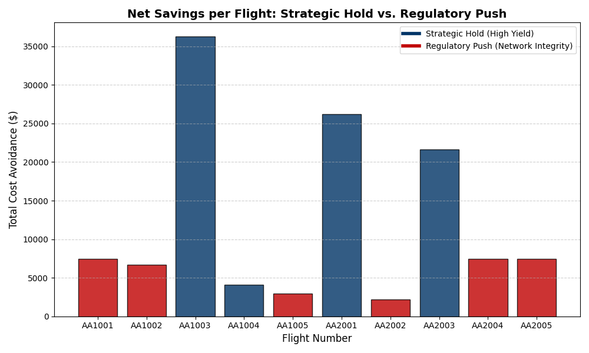

Hub Operations Integrity
> Identified $122,342.50 in net operational savings during a simulated 4-hour hub disruption by building a multi-constraint decision engine that balances passenger protection costs against regulatory guardrails and network stability.
Net Operational Savings
$122,342
4-Hour Recovery Window
Bag Backlog Cleared
370 Bags
via Latent Cargo Capacity
Downstream Legs Protected
12 Flights
Cascading Cancellations Avoided
Decision Framework
MCT Cliff Model
Hold vs. Push Cost Engine
Simulation Outputs
Cost Avoidance by Flight

Recovery Throughput

Decision Engine
The core logic compares the Cost of Passenger Protection against the Cost of Holding (delay + crew risk + gate conflict) to make a financially-optimal HOLD or PUSH decision per flight. A Regulatory Guardrail overrides when FAA Part 117 duty limits are threatened.
# COST MODELING: NETWORK RISK (DELAY + CONNECTIONS + CREW)
def calculate_network_risk(mins, onboard_pax, crew_risk, fc):
"""
Aggregates all network costs for a hold.
Non-linear MCT Cliff: delay costs spike at 15 and 30 min marks.
"""
base_delay_cost = mins * fc['cost_of_delay_per_min']
# 1. The MCT Cliff (Connection Risk)
multiplier = 1.0
if 15 < mins <= 30: multiplier = 2.5
elif mins > 30: multiplier = 5.0
connection_penalty = (onboard_pax * fc['missed_connection_penalty_per_pax']) * (mins / 60)
return base_delay_cost + (connection_penalty * multiplier) + crew_risk
# REGULATORY GUARDRAIL: FAA Part 117 Duty Limit Check
def calculate_crew_timeout_risk(hold_time, crew_data, fc):
remaining_buffer = crew_data['duty_mins_remaining'] - hold_time
if remaining_buffer <= 10: # Red Zone
total_impact = fc['cost_of_crew_timeout'] + \
(crew_data['downstream_legs'] * fc['downstream_cancellation_buffer'])
return total_impact
elif remaining_buffer <= 20: # Yellow Zone
return 5000 # Potential sub-out cost
return 0 # Green Zone: Crew is safe
# DECISION LOOP (per flight)
# if protect_cost > total_hold_cost: → HOLD 15M (absorb delay, save pax)
# elif duty_mins_remaining < 15: → FORCE PUSH (regulatory override)
# else: → PUSH NOW (cheaper to re-accommodate)Building the Decision Framework
Gate Sheet Ingestion & Passenger Classification
Parsed complex JSON gate manifests to distinguish Local No-Shows (bags already loaded, requiring pit search) from Security Stalls (passengers delayed at checkpoints). This classification drives the rework penalty calculation — a critical variable that proves a "Push Now" can often yield a longer net delay than a strategic 15-minute hold.
Non-Linear MCT Cliff & Cost Modeling
Developed a non-linear delay cost curve where penalties spike at the 15-minute and 30-minute marks to model hub misconnections. Integrated gate conflict costs ($180/min tarmac fuel burn for inbound aircraft), crew timeout risk, and downstream cancellation exposure into a single aggregate cost function per flight.
Capacity Recovery & Expedite Optimization
Utilized the latent cargo capacity created by passenger no-shows to clear a 370-bag backlog. Applied a "Fill-the-Bin" logic constrained by Maximum Zero Fuel Weight (MZFW), forward cargo volume, and dispatcher-enforced limits. Marginal fuel cost of clearing bags was ~$375 vs. ~$37,500 in avoided courier fees.
Strategic Recommendations
- • High-Yield segments (LAX, SFO) require a protective holding strategy due to limited re-accommodation frequency and protection costs exceeding $1,000/pax.
-
• Implement automated Part 117 monitoring via
duty_mins_remainingto establish Hard-Stop Departure Windows.
Technical Pivot
- • Evolved from linear cost-of-delay calculator into a Dynamic Hub Ecosystem with multi-constraint network modeling.
- • Incorporated Strict Positive Passenger Bag Match (PPBM) logic to account for mandatory baggage-offload delays and the 7-minute AFT search latency.
Technical Toolkit
Analyst Insight
"The rework penalty is the hidden cost of pushing on time. A 15-minute hold for 25 passengers is often faster than a Push-Now that triggers a 70-minute bag search for 10 local no-shows. The data shows that protecting the network is almost always cheaper than protecting the individual segment."
Github Repository